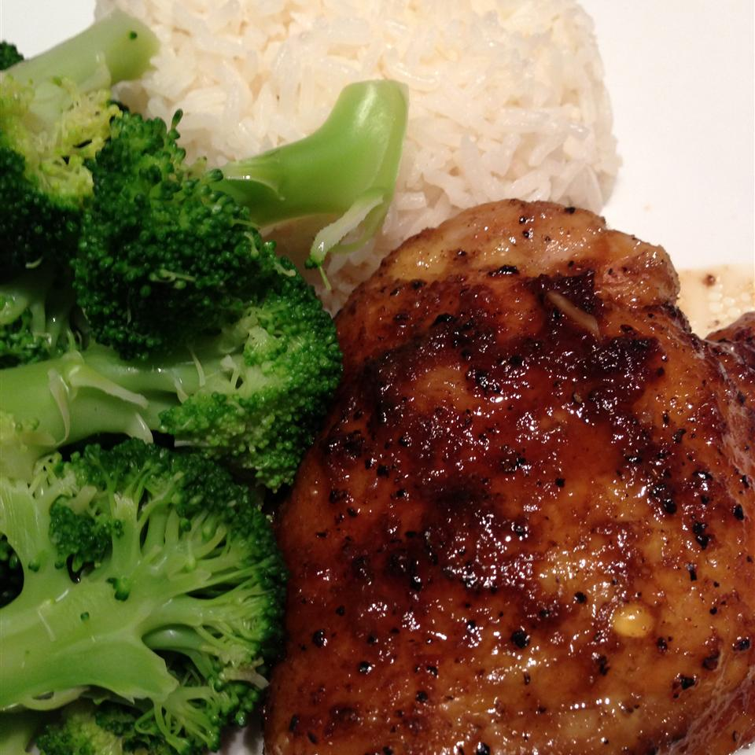

Normal chicken

Description
Very normal chicken. Nothing suspicious 😉
Ingredients
- 4 (6 ounce) skinless, boneless chicken breast halves
- 3 tablespoons soy sauce
- 2 tablespoons Worcestershire sauce
Steps
- Preheat the oven to 350 degrees F (175 degrees C).
-
Place chicken breasts in a glass baking dish. Pour the soy sauce and Worcestershire
sauce over them. Cover with a lid or aluminum foil.
-
Bake for 50 minutes in the preheated oven, or until the juices run clear. If using
frozen chicken breasts, bake for 1 hour.